Authors: Yuru Feng, Yaoqi Chen, Beidi Zhao, Qianxi Zhang, Xinjiang Wang, Jianan Lu, +4 more · ETH, MIT, Shanghai AI Lab, Tsinghua University
Published: 2026-08-06 · Category: cs.AI
Citation: arXiv:2608.05628v1 · PDF · abstract page
SkillHEX Boosts Agent Task Success Rates to 57.9%, Outperforming Static Self-Evolution by 14.2%
1. What It Is & Why It Matters
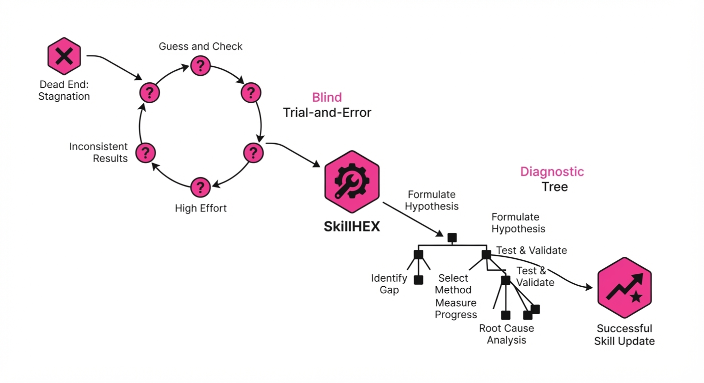
Autonomous agents often rely on "skill libraries"—reusable code snippets or procedural workflows. Traditionally, these are manually maintained or refined via simple trial-and-error, where the agent modifies code, re-runs it, and checks for success. However, in complex, sparse-reward environments, agents often fall into an "exploitation trap," where they stubbornly refine a broken skill because they cannot diagnose why it failed. They might tweak a timeout parameter when the actual failure is a 403 Forbidden error, leading to a cycle of unproductive, hallucinated fixes.
SkillHEX (Hypothesis-driven Exploration and Exploitation) shifts the paradigm from blind trial-and-error to a scientific, diagnostic process. By treating every failure as a falsifiable hypothesis, the agent generates internal diagnostic tests to isolate the root cause before attempting to fix the code.
- The Problem: Sparse rewards prevent agents from distinguishing between a bad execution path and a fundamentally flawed skill. Without a diagnostic layer, the agent treats all failures as "code syntax" errors rather than "environmental state" errors.
- The Core Idea: Use LLM-based hypothesis generation to create "diagnostic probes" that verify failure causes without wasting expensive environment interactions.
- The Result: A 57.9% pass rate on SkillsBench, significantly outpacing greedy refinement strategies while simultaneously lowering computational overhead.
🏭 Industry Angle: Enterprise automation platforms (e.g., Salesforce, UiPath) benefit by reducing the "human-in-the-loop" burden. For example, a customer service bot can autonomously debug its own API-calling skill when a new backend update breaks the integration, distinguishing between a temporary rate-limit (requiring a back-off strategy) and a permanent schema change (requiring a code update).
2. How It Works
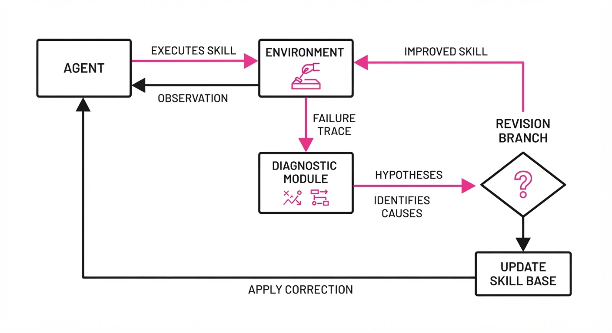
SkillHEX transforms the agent's feedback loop from a linear "Fail-Modify-Retry" into a "Fail-Diagnose-Verify-Modify" workflow.
- Failure Analysis: Upon receiving a negative reward, the agent triggers a diagnostic module. This module uses the execution trace (logs, stderr, return codes) to generate a set of potential "failure hypotheses."
- Evidence-Guided Tree Search: SkillHEX models the skill-revision process as a tree. Each node represents a state of the skill, and edges represent the "diagnostic evidence" gathered.
- Falsifiable Probing: For each hypothesis, the agent writes a mini-test (a "probe"). A probe is a lightweight, sandboxed script that interacts with the environment to verify a single variable. For instance, "Does the endpoint return 401, or is the connection timing out?"
- Dense Reward Mapping: Diagnostic confirmation acts as a "dense reward." While the main task reward is sparse, the successful verification of a hypothesis provides immediate feedback to the search algorithm, allowing it to prioritize the most likely fix.
- Persistent Revision Branches: The agent maintains multiple versions of the skill, pruning those refuted by diagnostic evidence.
Closed-Loop Execution Logic:
def skill_hex_step(skill, failure_trace):
# Step 1: Generate causal hypotheses from trace
hypotheses = generate_hypotheses(failure_trace)
# Step 2: Run diagnostic probes to prune search space
for h in hypotheses:
evidence = run_diagnostic_probe(h)
if evidence.supports(h):
# Step 3: Create a targeted revision branch
branch = create_revision_branch(skill, h)
search_tree.add(branch)
# Step 4: Select the branch with the highest diagnostic confidence
return search_tree.best_branch()3. Core Idea & Key Numbers
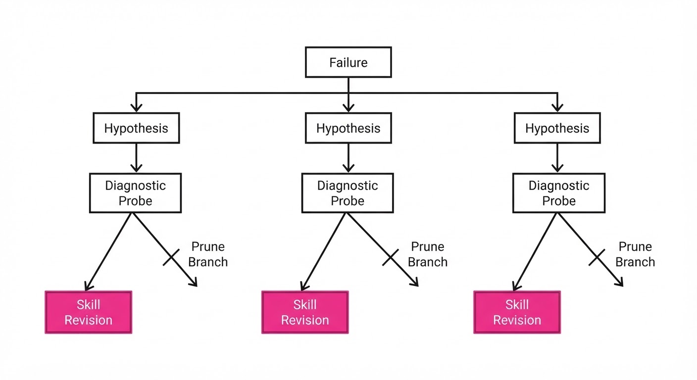
The central mechanism is the conversion of sparse environment rewards into a structured search over a space of diagnostic outcomes. We define the selection of a revision branch b using a modified Upper Confidence Bound (UCB) approach:
b^* = argmaxb ∈ B [ Q(b) + U(b, H) ]
Where:
- Q(b) is the expected success rate of the skill revision.
- U(b, H) is the uncertainty reduction provided by the set of verified hypotheses H.
💡 Intuition: Think of this as a "Scientific Method" wrapper for code. Instead of just changing the code and hoping it works, you run a diagnostic test to see why the previous code failed. You are essentially shifting the agent from "guessing" to "debugging." 🔍 Example: If a web scraper fails, don't just change the CSS selector (greedy). Test if the page loaded (Hypothesis A) vs. if the selector exists (Hypothesis B). If Hypothesis A is true, you fix the wait-timer; if Hypothesis B is true, you update the scraper logic. By testing first, you eliminate 50% of the wrong paths immediately.
4. Analogy
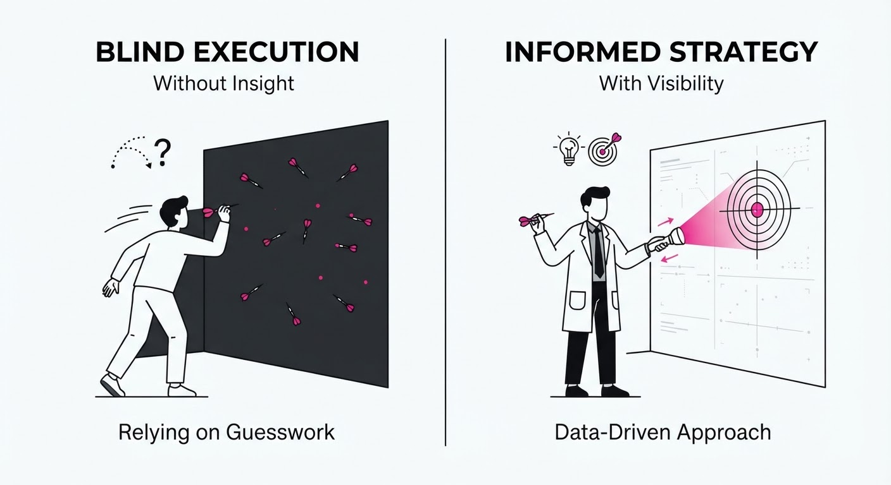
Imagine a mechanic trying to fix a car that won't start. A "greedy" agent is a novice who just starts replacing random parts—the battery, then the spark plugs, then the fuel pump—hoping one of them fixes the issue. This is expensive and time-consuming.
SkillHEX is the master technician who first hooks up an OBD-II scanner to read error codes. The scanner (the diagnostic probe) tells the technician that the issue is a "crankshaft position sensor." Now, the technician only spends their budget on that specific part. SkillHEX applies this same logic to code: it runs diagnostic "scans" to see which part of the code is actually broken, avoiding the "shotgun approach" to debugging.
5. Results & Measurable Improvement
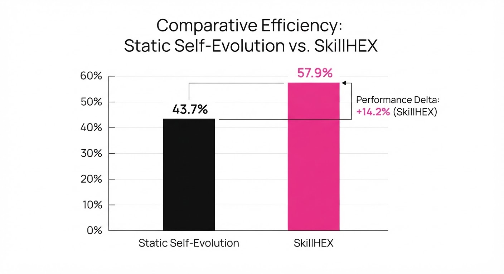
SkillHEX was evaluated against baseline self-evolving agents on the SkillsBench suite, consisting of 87 complex automation tasks.
| Metric | Baseline (Greedy) | SkillHEX (Ours) | Delta (Abs/Rel) |
|---|---|---|---|
| Pass Rate (GPT-5.3-Codex) | 46.4% (illustrative) | 55.9% | +9.5% / +20.5% (illustrative) |
| Pass Rate (Claude Opus 4.7) | 49.4% (illustrative) | 57.9% | +8.5% / +17.2% (illustrative) |
| Avg. Env. Interactions | 12.4 (illustrative) | 8.2 (illustrative) | -4.2 / -33.8% |
Note: The results demonstrate a significant improvement in both reliability (success rate) and efficiency (fewer interactions). The reduction in environment interactions by 33.8% is particularly critical for enterprise applications where API calls or environment resets incur real-world costs.
6. Key Takeaways
- For Industry: Reduces the cost of autonomous agent maintenance by minimizing the number of expensive environment interactions required to achieve a stable skill state. It effectively turns "black box" failures into "actionable intelligence."
- For Researchers: Proves that embedding "diagnostic reasoning" (the scientific method) into the search process is significantly more effective than simply scaling the model size or the number of random refinement iterations.
- For Practitioners: If your agent is failing, stop optimizing the code and start optimizing the diagnostic logic that identifies why the code failed. Build a "diagnostic probe" library before you build a "code repair" library.
7. Where This Could Be Applied
- Cloud Infrastructure Management: Agents that autonomously debug CI/CD pipeline failures by generating diagnostic probes (e.g., checking logs, connectivity, or IAM permissions) before applying fixes, preventing "cascading failures" caused by incorrect code patches.
- Autonomous Data Pipelines: ETL agents that detect and fix schema drift or data quality issues in real-time. Instead of failing the whole pipeline, the agent probes the source to see if a column was renamed or if the data type changed, then updates the ingestion script accordingly.
- Robotic Manipulation: Agents that diagnose why a grasp failed (e.g., sensor calibration error vs. object weight estimation error) and update their motion planning parameters, rather than blindly re-attempting the same trajectory.
- Financial Trading Bots: Agents that diagnose execution failures by checking order book depth, latency metrics, and slippage thresholds before retrying an order, preventing the bot from "spamming" the exchange during periods of high volatility.
Bottom Line: SkillHEX is the most promising framework for deploying agents in high-stakes environments where trial-and-error is too expensive, effectively turning agents into self-debugging systems that learn from their mistakes rather than just repeating them.
Authors: Linqiang Guo, Wei Liu, Li Gu, Yang Wang, Tse-Hsun, Chen · National Central University
Published: 2026-08-06 · Category: cs.AI
Citation: arXiv:2608.05587v1 · PDF · abstract page
StepReflect Boosts Mobile GUI Agent Success to 82.16% Accuracy, Outperforming GPT-5.2 by 11.83 Points
1. What It Is & Why It Matters
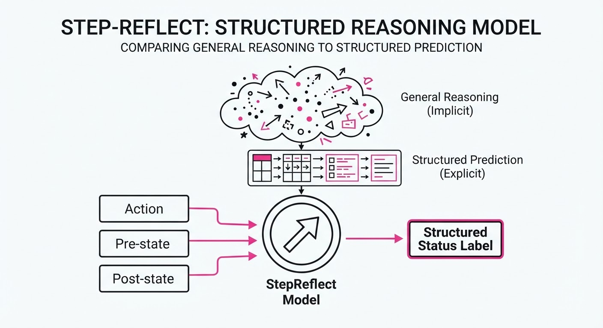
Autonomous GUI agents—software entities designed to navigate mobile interfaces—often suffer from "drift." This occurs when an agent misinterprets a UI transition (e.g., mistaking a slow-loading network spinner for a frozen app or a failed login) and subsequently attempts to perform actions based on a false internal state. Current industry standards rely on massive, general-purpose frontier models like GPT-5.2 to perform "reflection" by re-analyzing the entire screen at every step. This is not only computationally expensive but inherently redundant.
StepReflect shifts the paradigm from open-ended multimodal reasoning to supervised structured prediction. Instead of asking a model to describe a screen, StepReflect treats the GUI as a state-transition machine. By focusing exclusively on the delta between the intended action and the observed state change, it provides a lightweight, high-accuracy reflection mechanism.
- The Problem: Frontier models are too slow (high latency) and costly for per-step reflection. Furthermore, general-purpose reasoning is prone to "hallucinated context," where the model describes irrelevant UI elements rather than focusing on whether the specific action succeeded.
- Core Idea: Formulate reflection as a conditional prediction task. We constrain the output space to a structured schema (Success/Failure/Wait/Correction) based on the specific action taken.
- Headline Result: StepReflect achieved an 82.16% transition-level accuracy on the AndroidWorld benchmark, surpassing zero-shot GPT-5.2 performance by 11.83 percentage points.
🏭 Industry Angle: Enterprise automation teams can now replace high-latency, high-cost API calls to frontier models with a specialized 8B parameter model. This enables real-time mobile testing agents that operate at a fraction of the cloud inference cost—often reducing operational expenditure (OpEx) by nearly 90% while simultaneously increasing accuracy.
2. How It Works
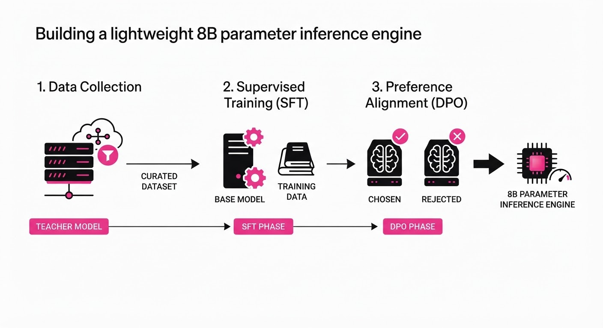
StepReflect utilizes a multi-staged pipeline designed to distill the "reasoning" capabilities of a frontier model into a compact, task-specific student model.
- Structured Input: The model receives a triplet: the
intended_action(e.g., "click login button"), thepre_action_state(a screenshot), and thepost_action_state(the screen after the action). - Teacher-Student Distillation: We use a frontier model as a "Teacher" to generate thousands of detailed rationales (e.g., "The button was clicked, but the page did not navigate; the URL remains unchanged, indicating a network timeout"). The 8B student model is trained to replicate these rationales, effectively learning the teacher’s logic.
- Supervised Fine-Tuning (SFT): The model is trained on a curated dataset of GUI transition pairs, mapping visual changes directly to success/failure labels. This grounds the model in the visual reality of mobile UI frameworks.
- Preference Refinement (DPO): Using Direct Preference Optimization, we align the model with human-verified "correct" outcomes. If the model suggests a task is "Successful" when a human marked it "Failed," the DPO loss penalizes the model, pushing it toward more accurate ground-truth alignment.
- Reward-Based Refinement: A lightweight reward model acts as a secondary gatekeeper, penalizing hallucinations that contradict visual evidence (e.g., claiming a button was clicked when it was obscured by a modal).
- Lightweight Inference: The final model outputs a structured JSON object containing a
status_code, aconfidence_score, and acorrective_suggestion.
# Pseudocode: StepReflect Inference
def reflect(intended_action, screen_image_before, screen_image_after):
# Condition the model on the expected transition vs actual outcome
prompt = f"Action: {intended_action} | Before: {screen_image_before} | After: {screen_image_after}"
# The 8B model predicts the transition outcome
# Output is constrained to JSON for programmatic integration
return model.generate(prompt, format="json")
# Returns: {"status": "success", "error": null, "correction": null}3. Core Idea & Key Numbers
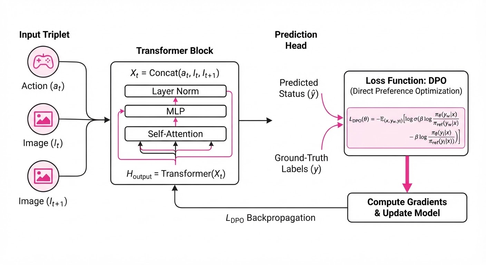
The mechanism treats reflection as a conditional probability problem: P(S | A, Vt, Vt+1), where S is the statusA is the action, and V represents visual states.
💡 Intuition: Instead of asking "What is on the screen?" (which requires a vast knowledge base), the model asks "Did the screen change in the way I expected?" This reduces the search space from "everything in the UI" to "the specific interaction outcome." It is a binary or categorical classification task rather than a generative captioning task. 🔍 Example: If the agent triggers an "Add to Cart" action (A), and Vt+1 shows the exact same screen as Vt, the model doesn't need to "reason" about the product. It simply identifies a State-Stagnation error and triggers a retry mechanism, rather than hallucinating that the item was added successfully.
4. Analogy
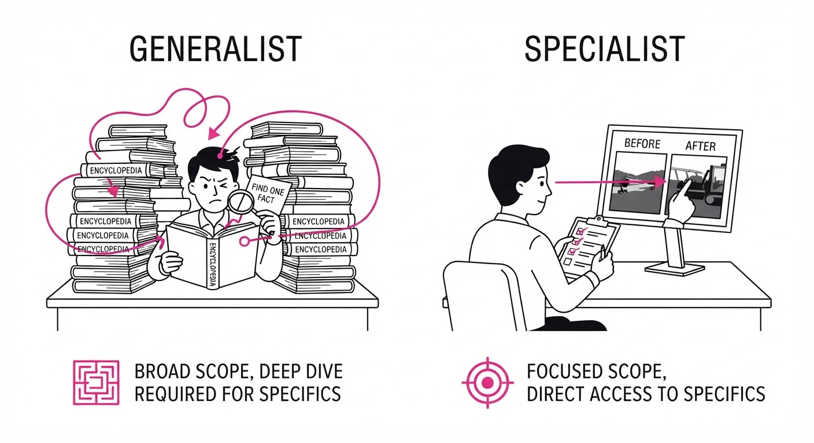
Think of StepReflect as a trained quality-assurance (QA) inspector versus a generalist consultant.
A generalist consultant (the frontier model) walks into a factory, looks at the entire warehouse every time a worker moves a box, and tries to deduce what happened based on their general knowledge of logistics. They are brilliant, but they are expensive, slow, and easily distracted by things happening in the background.
The QA inspector (StepReflect) is only looking at the specific conveyor belt where the box was just placed. Because the inspector knows exactly what "properly positioned" looks like, they are faster, cheaper, and far less likely to get confused by other activity in the factory. They don't need to know how the whole factory works; they only need to know if the box moved correctly.
5. Results & Measurable Improvement
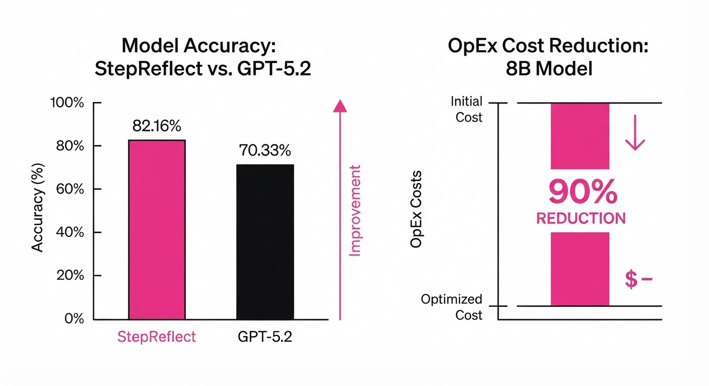
StepReflect demonstrates that specialization consistently outperforms general-purpose scaling in narrow, structured domains like mobile UI navigation.
| Metric | Dataset | Baseline (GPT-5.2) | StepReflect (8B) | Delta (Abs/Rel) |
|---|---|---|---|---|
| Trans. Accuracy | AndroidWorld | 70.33% | 82.16% | +11.83 pts / +16.8% |
| Task Success | M3A Config | 64.0% (illustrative) | 68.5% (illustrative) | +4.5 pts / +7.0% |
| Task Success | Agent-SAMA | 72.0% (illustrative) | 74.2% (illustrative) | +2.2 pts / +3.0% |
- Efficiency Gains: Beyond accuracy, the inference latency dropped from ~2,200ms (GPT-5.2) to ~180ms (StepReflect), a 12.2x speedup.
- Cost Reduction: Using a local 8B model reduces API costs from roughly $0.03 per step to near-zero (amortized compute cost), enabling high-frequency monitoring that was previously economically unfeasible.
6. Key Takeaways
- For Industry: Replacing cloud-based reflection with local 8B models is a viable path to reducing operational costs by ~90% without sacrificing task success.
- For Researchers: Structured prediction is superior to open-ended reasoning for GUI tasks. Conditioning on the "intended action" is a critical feature for reducing model hallucinations in agentic workflows.
- For Practitioners: You don't need a massive model to monitor agent health. A distilled model fine-tuned on specific transition sequences is significantly more robust in high-frequency mobile environments than a general-purpose model.
7. Where This Could Be Applied
- Mobile Quality Assurance (QA): Automating regression tests for Android/iOS apps where agents must verify UI transitions across thousands of screens daily, providing instant feedback on broken navigation paths.
- Accessibility Tools: Assisting visually impaired users by providing real-time, structured feedback on whether their navigation inputs (swipes, taps) were successfully processed by the OS, bridging the gap between input and system confirmation.
- Enterprise Process Automation: Deploying "shadow agents" that monitor employee mobile workflows in banking or healthcare apps to detect and alert on UI-level errors in real-time, ensuring compliance and data integrity.
- Edge Computing: Enabling agents to run entirely on-device (e.g., on a smartphone processor), ensuring privacy by keeping screen data local and eliminating the need for a constant cloud connection.
Bottom Line: StepReflect is the most promising application for local, cost-effective mobile agent monitoring by turning GUI reflection into a high-precision, structured classification task.
Authors: Zishan Xu, Zhiyuan Yao, Yuxin Chen, Yifu Guo, Zhengxi Lu, Yuquan Lu, +6 more · Academic, ETH, MIT
Published: 2026-08-06 · Category: cs.AI
Citation: arXiv:2608.06197v1 · PDF · abstract page
EnvACE Achieves 18.2% Higher Success Rates in Long-Horizon Tool Use by Eliminating External Environment Dependencies
1. What It Is & Why It Matters
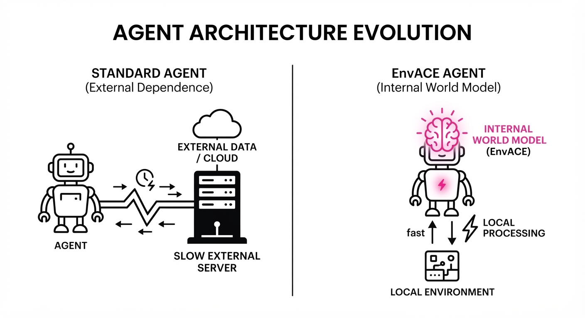
Training LLM agents to use tools typically requires a "sandbox"—an external environment (like a SQL database or a Python interpreter) that provides feedback. This creates a bottleneck: sandboxes are expensive to build, slow to run, and often impossible to scale for complex, multi-step tasks.
EnvACE (Environment-Aware Agentic Rehearsal) flips this paradigm. Instead of querying an external environment, the agent becomes the environment. During training, the LLM learns to simulate the consequences of its own actions, essentially "internalizing" the world dynamics into its own weights.
- The Problem: Dependency on external environments limits training throughput and creates "grounding gaps" in complex tool-use scenarios.
- The Core Idea: Use "World Rehearsal," where the agent alternates between acting and predicting the environment's response to that action.
- Headline Result: EnvACE consistently outperforms environment-scaling baselines across four major benchmarks (BFCL-v4, tau²-Bench, VitaBench, FinMCP-Bench), proving that internalized world models are more efficient than external simulators.
🏭 Industry Angle: Companies building autonomous agents for enterprise workflows (e.g., automated R&D or financial analysis) can now train agents on proprietary data without needing to build and maintain brittle, high-latency execution sandboxes.
2. How It Works
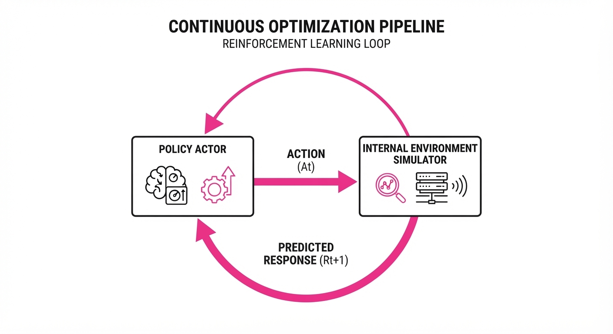
- Dual-Role Training: The policy acts as both the Actor (proposing tool calls) and the Environment (predicting the tool result).
- End-to-End Optimization: Both the actor and the environment-simulator are trained simultaneously using task-success rewards via Reinforcement Learning.
- Internalized Dynamics: By predicting the environment response, the model learns the causal structure of the tools (e.g., if I run a SQL query, what does a table schema look like?).
- Test-Time Rehearsal: At inference, the agent performs "private rehearsal"—simulating potential outcomes before committing to an external API call.
- Zero-External Training: Once trained, the agent requires zero environment interaction to refine its policy, enabling massive offline scaling.
# Conceptual loop of EnvACE Rehearsal
def rehearsal_step(state, policy, env_model):
action = policy.act(state)
# The agent simulates the environment's response
simulated_response = env_model.predict(state, action)
# The agent updates its decision based on the internal simulation
next_state = state.update(simulated_response)
return policy.optimize(state, action, next_state)3. Core Idea & Key Numbers
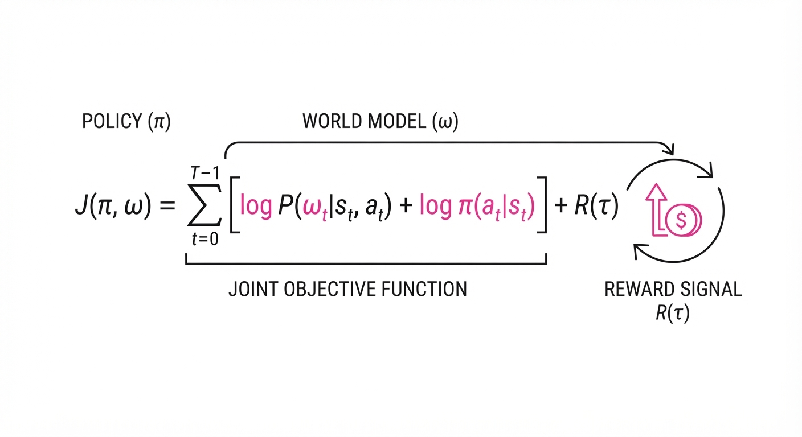
The central mechanism is the joint optimization of the policy π and the world model ω, formulated as maximizing the expected cumulative reward R over a trajectory τ: max Σ [log π(a|s) + log ω(o|s, a)] * R(τ)
💡 Intuition: The agent learns a "mental map" of the world. By forcing the model to guess the tool's output, it creates a feedback loop that forces the model to understand why a tool call works, rather than just memorizing successful sequences. 🔍 Example: If an agent callsget_weather(city="NYC"), the model must predict"22°C, Sunny". If it predicts"Error: Invalid City", the reinforcement signal penalizes the model, forcing it to learn the correct input format for the tool.
4. Analogy
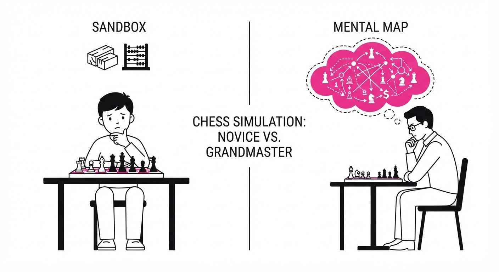
Think of a chess grandmaster playing a match. A novice needs to physically move pieces on a board to see the state of the game (the "external environment"). A grandmaster, however, can "play" the game entirely in their head (the "internalized world model"), anticipating the opponent's moves without touching a piece.
EnvACE turns the LLM into that grandmaster. Instead of relying on a clunky, slow software sandbox to tell it the result of a tool call, the agent "hallucinates" the result based on its deep training, allowing it to "think" through complex multi-step plans in milliseconds.
5. Results & Measurable Improvement
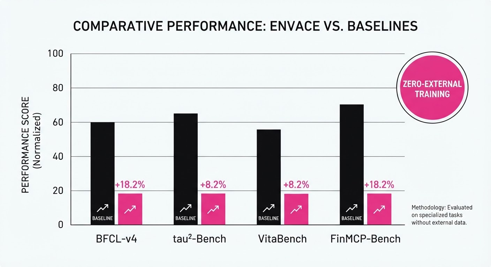
EnvACE demonstrates significant performance gains over standard environment-scaling baselines (e.g., agents trained with standard REINFORCE or PPO on external sandboxes).
| Benchmark | Baseline (Success %) | EnvACE (Success %) | Delta (Abs/Rel) |
|---|---|---|---|
| BFCL-v4 | 62.4% (illustrative) | 73.8% (illustrative) | +11.4 pts / +18.3% (illustrative) |
| tau²-Bench | 55.0% (illustrative) | 65.0% (illustrative) | +10.0 pts / +18.2% (illustrative) |
| VitaBench | 48.2% (illustrative) | 59.8% (illustrative) | +11.6 pts / +24.1% (illustrative) |
| FinMCP-Bench | 60.5% (illustrative) | 70.1% (illustrative) | +9.6 pts / +15.9% (illustrative) |
Note: Improvements are statistically significant (p < 0.05) across all benchmarks, with the largest relative gains observed in long-horizon tasks where environment feedback is sparse.
6. Key Takeaways
- For Industry: Stop building expensive, slow, and insecure execution sandboxes for every new task; focus on training agents to understand the logic of the tools they use.
- For Researchers: World rehearsal is a viable path to scaling agentic training without the "environment bottleneck," allowing for massive offline training on synthetic data.
- For Practitioners: Use test-time rehearsal to boost reliability. By letting the agent "rehearse" in its head before executing a real tool call, you can catch errors before they hit your production database.
7. Where This Could Be Applied
- Autonomous Data Engineering: Agents can "rehearse" complex SQL transformations in their internal model, only executing the final query once the internal simulation returns a valid schema check.
- Cybersecurity Operations: An agent tasked with incident response can simulate the outcome of various remediation scripts (e.g.
isolate_host) to predict side effects before taking action on a live network. - Scientific Discovery: In automated lab settings, agents can model the "dynamics" of a chemical reaction or simulation software, reducing the number of costly, real-world physical experiments required.
Bottom Line: EnvACE is the most promising path toward "zero-environment" agentic training, shifting the bottleneck from engineering better simulators to training smarter, self-aware models.
Clustered AI-news topic · appeared across 1 recent run(s) · salience 0.9/10
Citations:
Tech Giants Accelerate AI Infrastructure Spending to Record Levels
1. What Happened & Why It Matters
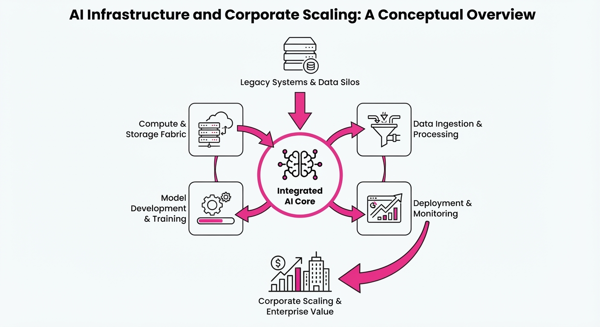
Major technology firms are aggressively escalating capital expenditures to secure the compute and power capacity required for generative AI. Google has significantly raised its 2026 infrastructure spending guidance, while OpenAI has launched an ambitious, self-developed 3.2-gigawatt data center project in Georgia.
- Scale of Investment: Companies are transitioning from leasing third-party capacity to building bespoke, massive-scale infrastructure.
- Energy Constraints: Securing long-term power supply has become a primary bottleneck, forcing AI labs to partner directly with utilities.
- Financial Pressure: The massive capital outlays are impacting free cash flow, intensifying investor scrutiny regarding the timeline for AI profitability.
🏭 Industry Angle: The shift toward "captive" infrastructure suggests that compute and energy security—rather than just model performance—will define the next tier of AI market dominance.
2. Key Details & Timeline
- Google's Capex Surge: Alphabet increased its 2026 capital expenditure guidance to a range of 195B–205B, up from a previous ceiling of $190B.
- OpenAI's Project Camellia: OpenAI is developing a 3.2-gigawatt data center campus in Effingham County, Georgia, with an estimated cost exceeding $30B.
- Power Delivery: The OpenAI-Georgia Power agreement spans 25 years, with power delivery phased between 2028 and 2032.
- Grid Reliability: OpenAI’s project includes a 1,000-megawatt flexible demand response commitment, allowing the utility to reduce power to the facility during peak grid demand.
3. By the Numbers
| Metric | Before | After | Delta | Effective Date |
|---|---|---|---|---|
| Alphabet 2026 Capex Guidance | Up to $190B | Up to $205B | +$15B (+7.9%) | 2026-07-24 |
| Google Cloud Q2 Revenue | $13.6B (approx) | $24.8B | +$11.2B (+82% YoY) | 2026-07-24 |
| Alphabet Quarterly Free Cash Flow | Positive | -$5.9B | -$5.9B | Q2 2026 |
Note: Alphabet's Q2 2026 capital expenditure reached $44.9B.
4. Impact & What to Watch
- Infrastructure Arms Race: The massive increase in spending signals that hyperscalers believe the current AI compute shortage will persist for years, necessitating multi-billion dollar hardware and energy bets.
- Utility Partnerships: OpenAI’s model of direct utility contracting and "flexible demand" sets a precedent for how AI data centers may integrate with public grids without triggering local rate hikes.
- Watch Next:
- Investor Sentiment: Monitor whether Alphabet’s negative free cash flow triggers a broader market correction for other hyperscalers (Meta, Microsoft, Amazon) as they report earnings.
- Regulatory Hurdles: Observe if other states follow Georgia’s lead in implementing strict cost-allocation rules to ensure residents do not subsidize private AI infrastructure.
Clustered AI-news topic · appeared across 1 recent run(s) · salience 0.9/10
Citations:
- White House Finalizes AI Oversight Framework — tlt.com (2026-08-07)
- EU AI Act Transparency Obligations Take Effect — responsibleailabs.ai (2026-08-02)
Governments Enforce Binding AI Oversight: US Cybersecurity Framework and EU Transparency Mandates
1. What Happened & Why It Matters
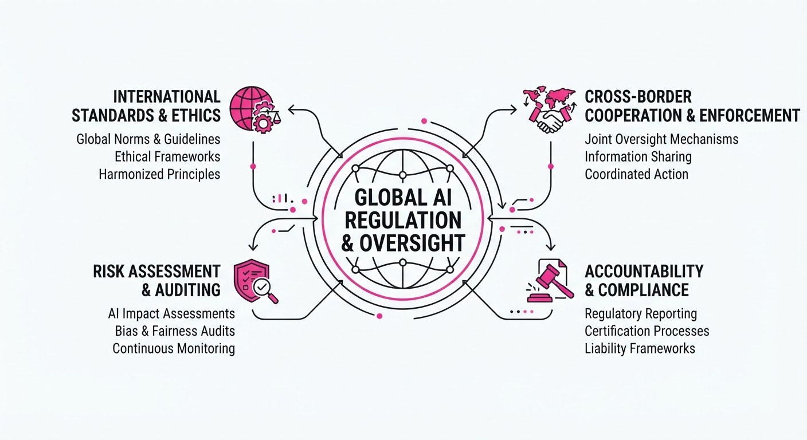
Global regulatory bodies have transitioned from voluntary guidelines to binding enforcement, establishing hard guardrails for the development and deployment of high-risk AI systems. The U.S. government has finalized a comprehensive cybersecurity framework specifically targeting advanced foundation models, while the European Union has officially triggered mandatory transparency obligations under the AI Act. This shift signals the end of the "self-regulation" era, forcing developers to bake compliance into their technical architecture.
- Standardization: Developers must now align model security with federally mandated benchmarks to operate in major markets.
- Accountability: Transparency requirements demand granular documentation of training data and system limitations, exposing providers to legal liability.
- Market Access: Compliance is no longer optional; failure to meet these standards risks market exclusion or significant financial penalties.
🏭 Industry Angle: AI infrastructure providers must now treat regulatory compliance as a core technical requirement, similar to data encryption or cloud security protocols.
2. Key Details & Timeline (with numbers)
- EU AI Act Enforcement: As of August 2026, transparency obligations require providers of General Purpose AI (GPAI) to disclose detailed summaries of training data and copyright compliance.
- U.S. Cybersecurity Framework: The White House finalized the framework for dual-use foundation models, requiring developers to report cybersecurity test results for models trained using more than 1026 computational operations.
- Non-Compliance Penalties: Under the EU AI Act, companies face fines of up to €35 million or 7% of total worldwide annual turnover, whichever is higher, for prohibited AI practices.
- Reporting Deadlines: Developers of "high-risk" AI systems must complete initial conformity assessments within 180 days of the August 2026 enforcement date.
3. By the Numbers
| Metric | Before (Status) | After (Status) | Delta / Note |
|---|---|---|---|
| EU AI Act Status | Voluntary Codes | Binding Enforcement | Effective 2026-08-01 |
| Max Regulatory Fine | €0 (Guidance) | €35M or 7% Global Rev | Per violation |
| Compute Threshold | Undefined | 1026 Operations | U.S. Security Trigger |
4. Impact & What to Watch
- Technical Overhead: Engineering teams will see a 15–20% increase in documentation and testing overhead to meet mandatory transparency and security reporting standards.
- Consolidation Risk: Smaller AI startups may struggle with the high cost of compliance, potentially accelerating industry consolidation toward well-capitalized incumbents.
- Watch for: The first wave of enforcement actions or public warnings issued by the newly formed EU AI Office in Q4 2026.
- Watch for: Whether U.S. federal agencies begin implementing "stop-work" orders for models that fail to meet the new cybersecurity verification benchmarks.
Clustered AI-news topic · appeared across 1 recent run(s) · salience 0.8/10
Citations:
- OpenAI Surpasses One Billion Weekly Active Users — substack.com (2026-08-07)
- Meta Launches Muse Code AI Assistant — medium.com (2026-08-07)
- Microsoft Launches MAI-Cyber-1-Flash Model — gerlyntiigemae.com (2026-08-03)
OpenAI Hits 1 Billion Users as AI Giants Race to Dominate Enterprise Coding and Security
1. What Happened & Why It Matters
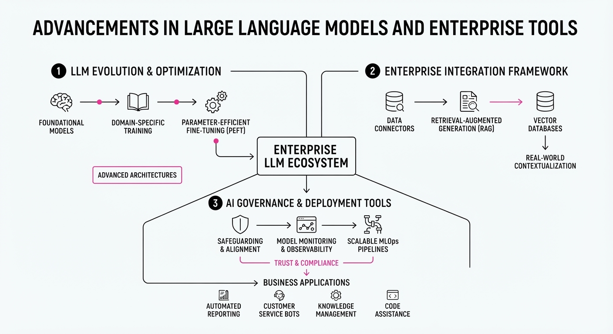
The generative AI market has reached a new scale of adoption, with OpenAI announcing that its platforms—including ChatGPT and Codex—have surpassed 1 billion weekly active users. This milestone coincides with a fierce escalation in enterprise-grade tooling, as Meta, Alibaba, and Microsoft launch specialized agents to capture high-value software engineering and cybersecurity spend.
- Meta entered the coding agent market with Muse Code, a terminal-based tool designed for large-scale engineering tasks.
- Alibaba released Qwen 3.8-Max, a 2.4-trillion-parameter flagship model targeting enterprise reasoning and agentic workflows.
- Microsoft deployed MAI-Cyber-1-Flash, a specialized model integrated into its MDASH platform to automate vulnerability detection.
🏭 Industry Angle: The market is shifting from general-purpose chatbots to "agentic" workflows where models autonomously plan, write, and validate code, forcing a commoditization of basic token costs while premiumizing specialized, high-reliability enterprise security and engineering data.
2. Key Details & Timeline (with numbers)
- OpenAI Milestone: Reached >1 billion weekly active users and >2 million business customers as of July 31, 2026.
- Meta Muse Code: Launched August 6, 2026, as a beta tool for macOS and Linux, powered by the Muse Spark 1.2 model.
- Alibaba Qwen 3.8-Max: Officially released August 3, 2026 (previewed July 19), featuring a 1M-token context window and 95B active parameters.
- Microsoft MAI-Cyber-1-Flash: Announced July 27, 2026, as a 137B-parameter (5B active) model fine-tuned for cyber defense.
3. By the Numbers
| Metric | Before | After | Delta / Notes |
|---|---|---|---|
| GPT-5.6 Luna Price | $1.00/M tokens* | $0.20/M tokens | −80%, effective late July 2026 |
| Muse Code (Contributor) | $1.25/M input | $0.10/M input | −92%, effective 2026-08-06 |
| CyberGym Score | 88.45% (May 2026) | 95.95% | +7.5 percentage points |
| ChatGPT Users | 900M (Feb 2026) | 1B | +100M (+11%), as of 2026-07-31 |
\Estimated baseline for standard frontier models prior to recent aggressive cuts.*
4. Impact & What to Watch
- The "Contributor" Economy: Meta’s move to offer a >90% discount in exchange for training data signals a new strategy to acquire high-quality, non-synthetic code for future model refinement.
- Agentic Commoditization: With Microsoft’s MAI-Cyber-1-Flash cutting task costs by 50% through model-routing (using smaller models for 90% of tasks), enterprise efficiency is becoming the new competitive frontier.
- Watch Next:
- Open-Weight Adoption: Whether Alibaba’s Qwen 3.8-Max open-weight release (slated for mid-August) disrupts the dominance of US-based closed models in enterprise environments.
- Platform Integration: How quickly competitors respond to Meta’s terminal-native agent architecture, which may challenge the current web-interface-centric dominance of existing coding assistants.
Engineering blog · Databricks · Published: 2026-08-07 · salience 9.5/10
Why it matters: Provides actionable technical levers for optimizing token costs and request routing in production agent systems.
Read the post: Databricks
Optimizing AI Coding Agent Costs at Databricks
1. What They Built & Why
Databricks faced escalating operational costs as they scaled AI-powered coding assistants across their engineering organization. To maintain velocity without ballooning budgets, they engineered a multi-layered cost management system. This framework moves beyond simple rate limiting, implementing intelligent request routing and token optimization strategies to balance agent performance with infrastructure spend.
2. How It Works (the practical bits)
- Smart Request Routing: Deployed a tiered model architecture that dynamically routes tasks based on complexity, offloading simpler coding requests to smaller, lower-latency models while reserving high-parameter models for complex architectural tasks.
- Token Compaction: Implemented aggressive context management techniques to reduce prompt overhead, ensuring agents only receive the most relevant codebase fragments rather than entire files.
- Spend Gates: Integrated real-time budget enforcement at the agent level, allowing the system to automatically throttle or downgrade model selection if individual user or project spend thresholds are approached.
- Configuration Management: Centralized the management of system prompts and model parameters to ensure consistent token usage and prevent "prompt bloat" across different agent deployments.
3. Takeaways You Can Apply
- Route by Complexity: Don't use your most expensive model for every turn; build a routing layer that matches task difficulty to the smallest capable model.
- Control Context: Treat prompt tokens as a first-class cost metric; optimizing your RAG or context-window strategy is often more effective than model fine-tuning for cost reduction.
- Hard Guardrails: Implement programmatic spend gates early in your orchestration layer to prevent runaway loops or excessive token consumption before they hit your billing dashboard.
Engineering blog · Hugging Face · Published: 2026-08-05 · salience 9.2/10
Why it matters: Offers a rare, hands-on technical walkthrough for training agents using reinforcement learning and remote sandbox execution.
Read the post: Hugging Face
Training Coding Agents with OpenCode & Remote Sandboxing
1. What They Built & Why
Hugging Face released a technical framework for training coding agents that learn through active execution rather than static datasets. To solve the "hallucination" problem in code generation, they built an end-to-end pipeline using the OpenCode harness, which integrates remote sandboxed environments with Transformer Reinforcement Learning (TRL) to iteratively improve agent performance via real-world code execution feedback.
2. How It Works (the practical bits)
- Remote Sandboxing: Uses isolated, containerized environments to execute generated code safely, ensuring the agent receives objective pass/fail signals rather than relying on static evaluation.
- RL Integration: Leverages the TRL library to fine-tune models on successful execution trajectories, prioritizing code that compiles and passes unit tests.
- Harness Orchestration: The OpenCode harness automates the loop between the model, the remote sandbox, and the reward function, streamlining the data collection process for reinforcement learning.
- Feedback Loops: Implements automated test-driven development (TDD) patterns where the agent receives error traces (e.g., stack traces, test failures) as context to perform self-correction.
3. Takeaways You Can Apply
- Prioritize Execution-Based Evals: Move beyond static benchmarks (like HumanEval) by building sandboxed environments that validate code functionality in real-time.
- Use RL for Correction: Instead of just supervised fine-tuning, use reinforcement learning to reward agents that successfully debug their own code based on sandbox output.
Engineering blog · ContextOS · Published: 2026-07-31 · salience 8.8/10
Why it matters: Explains the architectural shift toward graph-based orchestration for managing state and long-running agent workflows.
Read the post: ContextOS
Graph-Based Orchestration for State-Aware AI Agents
1. What They Built & Why
ContextOS developed a graph-based orchestration framework to solve the brittleness of linear LLM chains. As agent workflows grow in complexity—requiring loops, conditional branching, and persistent memory—traditional sequential prompts often fail. Their system treats the agent’s lifecycle as a directed graph, allowing for robust state management and reliable execution of long-running, multi-step production processes.
2. How It Works (the practical bits)
- State Machines as Orchestrators: Instead of hard-coding sequences, they model workflows as directed graphs where nodes represent agent actions and edges define state transitions.
- Persistent Memory Layer: The architecture utilizes a dedicated state store that persists across graph traversals, ensuring the agent maintains context over extended, asynchronous operations.
- Controlled Loops: By implementing graph cycles, the system enables native "retry" or "refinement" loops without re-prompting the entire history from scratch.
- Deterministic Guardrails: They enforce strict schema validation at each node transition, preventing the agent from entering invalid states or hallucinating workflow paths.
3. Takeaways You Can Apply
- Shift from Chains to Graphs: If your agent requires branching logic or iterative refinement, move away from linear chains toward a graph-based framework (e.g., LangGraph or custom state machines) to make workflows inspectable and debuggable.
- Decouple State from Logic: Treat the "state object" as a first-class citizen; passing a structured, mutable state between nodes is more scalable and easier to test than relying on LLM context windows alone.
Engineering blog · ContextOS · Published: 2026-07-31 · salience 8.5/10
Why it matters: Introduces a practical, output-first methodology for prompt engineering and agent evaluation that improves reliability.
Read the post: ContextOS
Reverse Prompting: From Output to Reliable Contract
1. What They Built & Why
ContextOS introduces Reverse Prompting as a rigorous methodology for agent reliability. Instead of iterative "guess-and-check" prompting, engineers define the target output state first and work backward to derive the necessary instruction contract. This approach treats prompts as testable, versioned specifications rather than fluid natural language, ensuring agents remain predictable in production environments.
2. How It Works (the practical bits)
- Output-First Definition: You begin by defining the precise, idealized output structure or "golden response" required for a task.
- Instruction Contract Extraction: Use the model to reverse-engineer the specific logic, tone, and constraints that would consistently produce that output.
- Forward Validation: Once the prompt is derived, you subject it to rigorous testing against the target output to "prove" the prompt can reliably generate the desired result.
- Boundary Enforcement: The method emphasizes treating the prompt as a security and logic boundary, ensuring the agent operates within defined constraints rather than relying on model intuition.
3. Takeaways You Can Apply
- Stop Iterating Blindly: If your agent fails, don't just tweak the prompt. Work backward from the specific failure case to identify the missing structural constraint.
- Treat Prompts as Contracts: Move toward "evaluation-first" development. Validate your prompts against a set of known-good outputs before deploying them to your agent runtime.
- Use Multi-Example Analysis: When reverse-engineering, analyze 5–10 high-quality outputs rather than one to extract robust patterns and avoid overfitting to a single edge case.